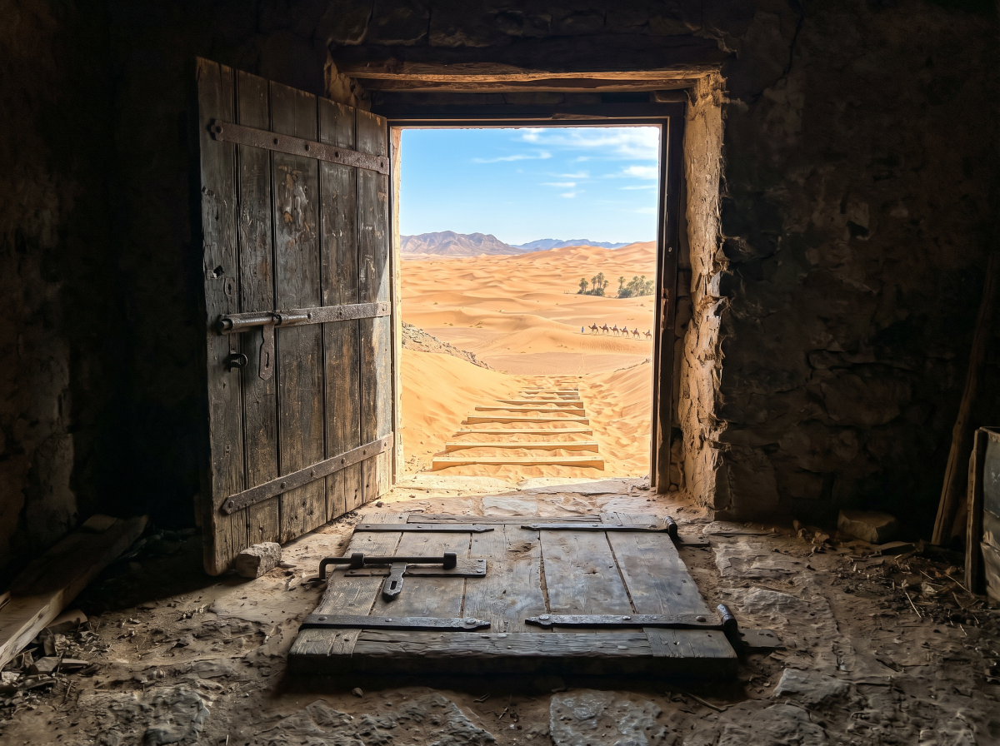
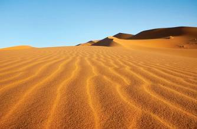
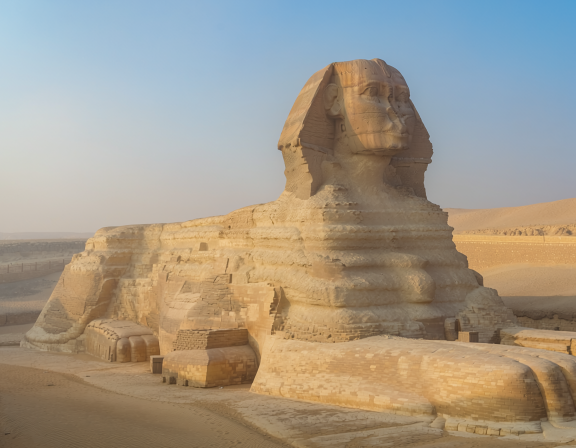

Trapdoor that leads to desert
Sixteen-year-old Brooklyn had exactly three seconds to regret touching the strange brass tile on her grandmother’s attic floor.
One second to hear the click.
One second to feel the floor vanish beneath her.
And one second to scream as she shot down a steep wooden chute like a runaway coin.
Then—blinding light. Heat. Sand.

She landed in a dune with a soft thud, coughing as she pushed herself upright. The sky above her was a fierce, impossible blue. The air shimmered. The wind whispered across the dunes like it was carrying secrets.
Brooklyn spun around, expecting to see the trapdoor she’d fallen through. Nothing.
Just endless desert stretching in every direction.
“Great,” she muttered, brushing sand off her hoodie. “Perfect. Love this for me.”
She desides to go up through the trapdoor into the normal world leaving the sphinx.

